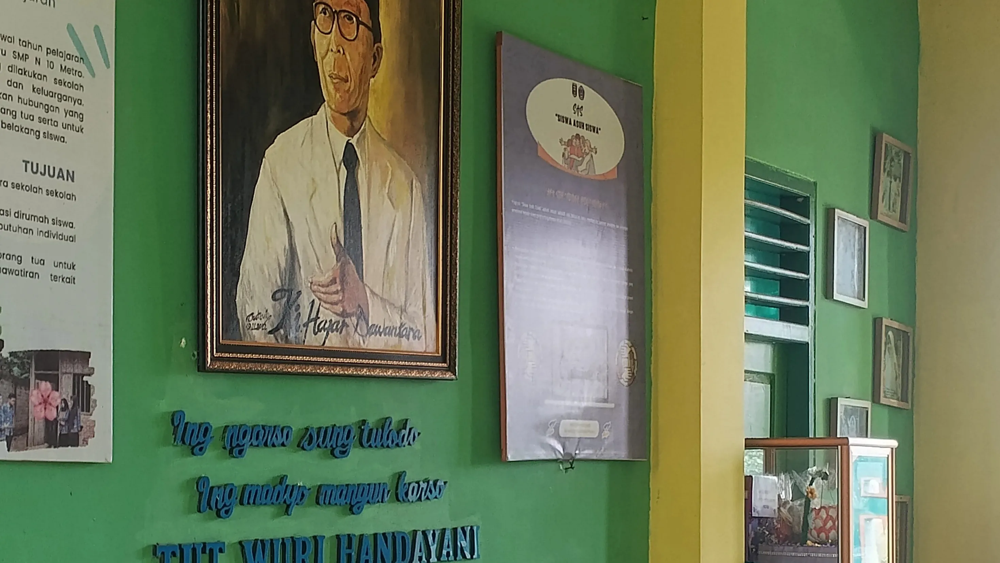
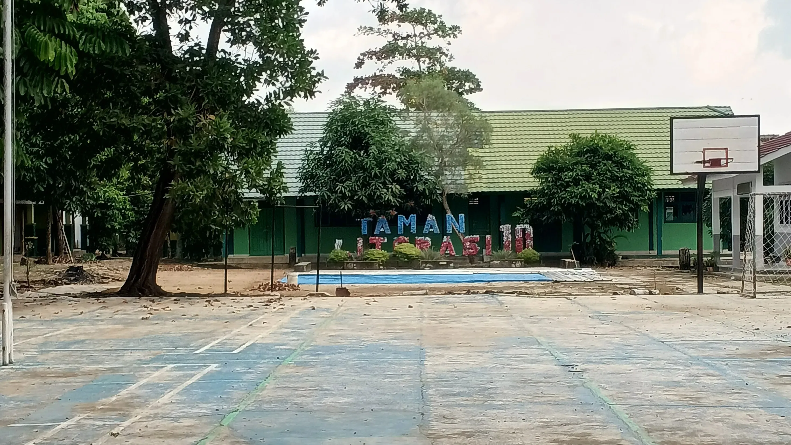
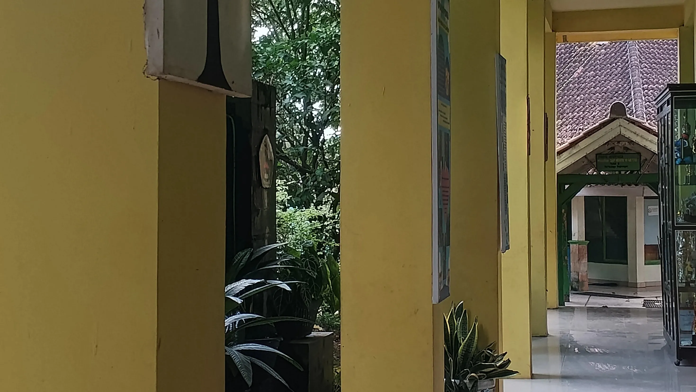
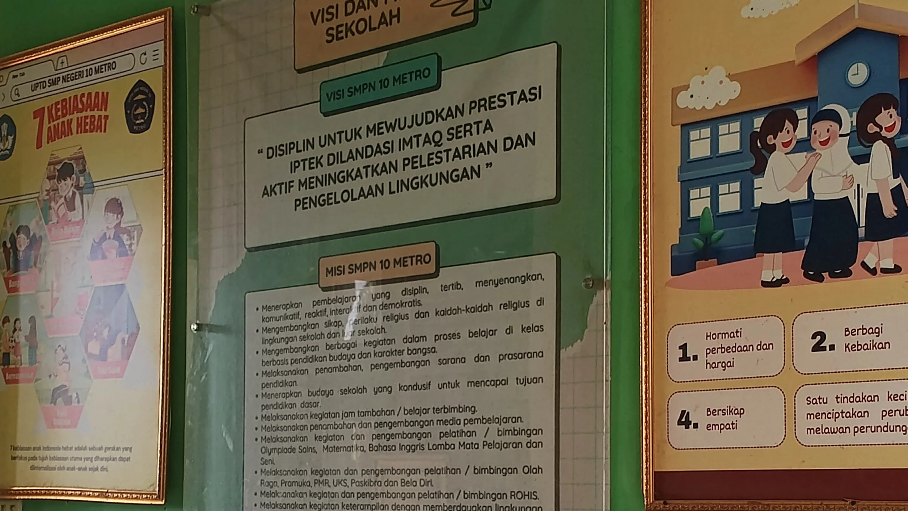
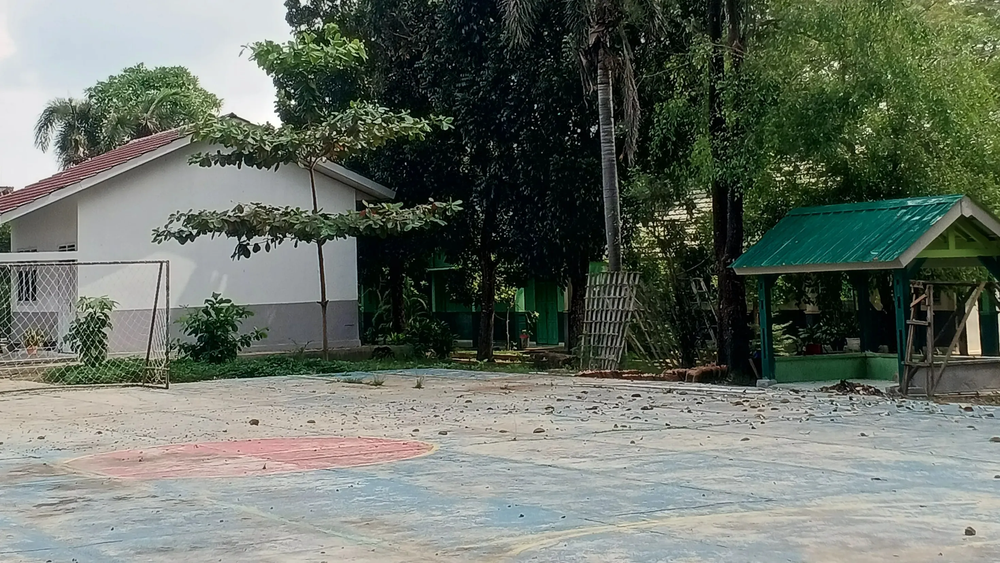
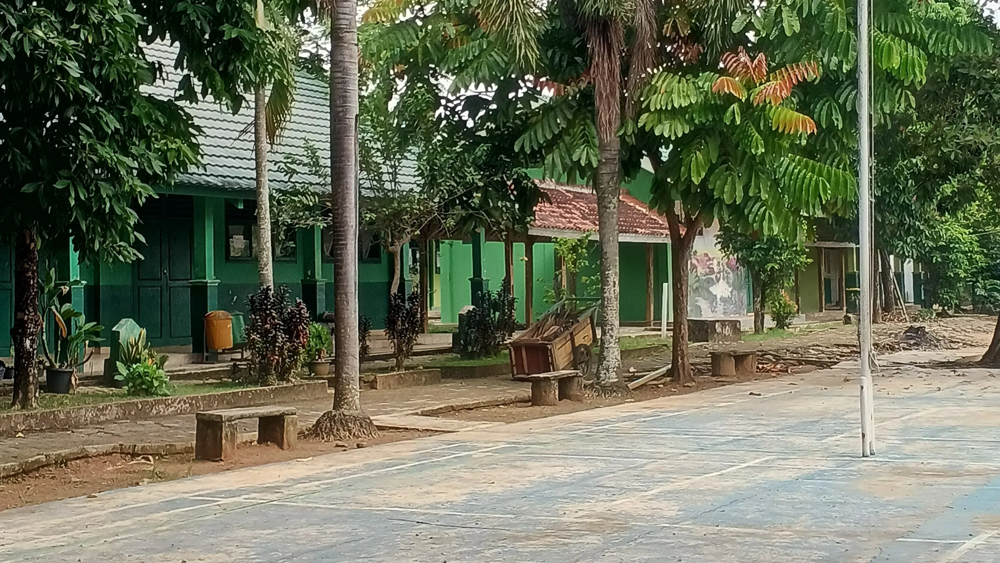

UPTD SMP NEGERI 10
METRO LAMPUNG
METRO LAMPUNG






Salam sejahtera bagi kita semua. Puji syukur kita panjatkan ke hadirat Tuhan Yang Maha Esa atas rahmat dan karunia-Nya. UPTD SMP Negeri 10 Metro berkomitmen untuk terus memberikan pendidikan yang berkualitas dengan menciptakan lingkungan belajar yang aman, nyaman, disiplin, dan mampu mengembangkan potensi serta karakter setiap peserta didik. Dengan dukungan dan kerja sama seluruh warga sekolah, orang tua, dan masyarakat, mari kita bersama-sama mewujudkan UPTD SMP Negeri 10 Metro sebagai sekolah yang unggul, berkarakter, berprestasi, dan mampu mempersiapkan generasi yang siap menghadapi masa depan.
Akreditasi
Siswa
Guru & Tendik
Ekstrakurikuler
“Disiplin untuk Mewujudkan Prestasi IPTEK dilandasi IMTAQ serta aktif Meningkatkan Pelestarian dan Pengelolaan Lingkungan."